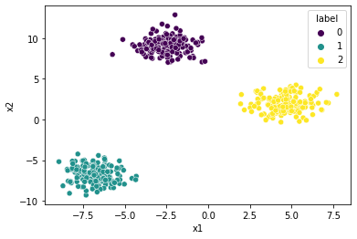
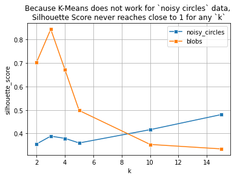
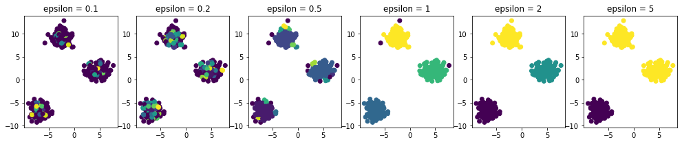
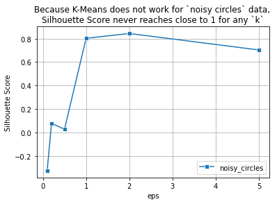

Clustering is the most well-known unsupervised learning technique. The goal of clustering is to discover groups in observations. The groups are called clusters.
The data points in the same cluster are similar to each other, compared to points in different clusters, which are relatively dissimilar.
There are many clustering algorithms. In this notebook, we will focus on two of them: 1. One that requires the number of clusters (\(k\)) to be specified: K-means. 2. And another that does NOT require the number of clusters to be specified: DBSCAN.
To compare the performance of the clustering algorithms, in the code below we will use the same six datasets capturing a wide variety of patterns and structures.
Note that the data sets are not labeled. Also note that unsupervised learning algorithms do not work only with 2-dimensional data but with data of any dimensionality. Here we use 2-dimensional data only to be able to visualize the results.
K-means
The k-means algorithm is a simple and popular clustering algorithm. It is an iterative algorithm that partitions the data points into a pre-specified \(k\) number of clusters.
The algorithm works as follows: 1. Start: Select \(k\) random points as the initial centroids. 2. Update Cluster Assignments: Assign each data point to the cluster with the nearest centroid. 3. Update Cluster Centers: Update the centroids of the clusters by taking the average of the data points in each cluster. 4. Repeat steps 2 and 3 until the centroids do not change.
The animation below visualizes the algorithm:
The algorithm is guaranteed to converge to a result. However, the result may not be the optimal one.
Because of random initialization, the algorithm converges to different results on different runs. Such algorithms or processes, where there is an element of randomness but with some bounds of predictability, are called stochastic algorithms or processes.
Before Clustering
Let’s try the k-means algorithm on the blobs dataset first. Note that the raw data has just two features (x1 and x2) but no labels.
X = datasets['blobs']X.head()
x1
x2
0
-5.730354
-7.583286
1
1.942992
1.918875
2
6.829682
1.164871
3
-2.901306
7.550771
4
5.841093
1.565094
The code below plots the raw data as a scatter plot.
Note that there are clearly three clusters in the data where the points within each cluster are closer to each other compared to points across clusters.
Clustering
We will use the KMeans class from the sklearn.cluster module.
The constructor of the KMeans class takes the number of clusters \(k\) as input.
The KMeans class has a fit() method that takes the data as input and runs the k-means algorithm on it.
After we fit the model to the data, we can use the .labels_ attribute to get the discovered labels of the clusters assigned to each data point.
Below we add a third feature label to the data, which is the cluster label assigned to each data point by the k-means algorithm.
from sklearn.cluster import KMeanskmeans = KMeans(n_clusters=3, random_state=0)kmeans.fit(X)X['label'] = kmeans.labels_X.head()
x1
x2
label
0
-5.730354
-7.583286
1
1
1.942992
1.918875
2
2
6.829682
1.164871
2
3
-2.901306
7.550771
0
4
5.841093
1.565094
2
After Clustering
The code below plots the data again, but this time with the cluster labels.
import seaborn as sns sns.scatterplot(data=X, x='x1', y='x2', hue='label', palette='viridis');

Note that the k-means algorithm has perfectly discovered the three blobs in the data.
Limitations of K-means
K-means is a simple and popular clustering algorithm. However, it has some limitations:
It requires the number of clusters \(k\) to be specified. If the number of clusters is not known in advance, then we need to try different values of \(k\) and select the one that gives the best results.
It is sensitive to the initial random selection of centroids. The algorithm may converge to different results on different runs.
Since k-means is reliant on averages, it is sensitive to outliers. Outliers can significantly affect the location of the centroids and hence the clusters.
Most importantly, k-means does not work well with clusters of different sizes and densities. It assumes that the clusters are spherical and of similar size.
To illustrate this limitation, let’s try the k-means algorithm on a dataset that does not satisfy the assumptions of the algorithm.
Note how the k-means algorithm fails to discover the two clusters in the data. This is because the clusters are a) not spherical and b) of different sizes.
Such failures of a clustering algorithm can only be detected by either visualizing the results or computing internal cluster validation metrics such as the silhouette score.
Silhouette Score
The Silhouette Score is calculated using the mean intra-cluster distance (\(a\)) and the mean nearest-cluster distance (\(b\)) for each sample. The Silhouette Coefficient for a sample is
where \(b\) is the distance between a sample and the nearest cluster that the sample is not a part of.
Note that Silhouette Coefficient is only defined if number of labels is 2 <= n_labels <= n_samples - 1.
sklearn.metrics.silhouette_score function returns the mean Silhouette Coefficient over all samples. To obtain the values for each sample, use silhouette_samples.
The best value is 1 and the worst value is -1. Values near 0 indicate overlapping clusters. Negative values generally indicate that a sample has been assigned to the wrong cluster, as a different cluster is more similar.
A score of 1 indicates that the object is far away from the neighboring clusters. A score of 0 indicates that the object is close to the decision boundary between two neighboring clusters. A score of -1 indicates that the object may have been assigned to the wrong cluster.
from sklearn.metrics import silhouette_scoresilhouette_score(X, kmeans.labels_)
0.355318252897544
DBSCAN
DBSCAN stands for Density-Based Spatial Clustering of Applications with Noise. It is a density-based clustering algorithm. It is a popular clustering algorithm because it does not require the number of clusters to be specified. It can discover clusters of arbitrary shapes. It can also identify outliers in the data.
The algorithm has two parameters:
\(\epsilon\): maximum distance between two points for them to be considered as in the same neighborhood.
\(m\): minimum number of points required to form a dense region.
The algorithm works as follows:
It starts with an arbitrary point in the data set that has not been visited.
It finds all of the points in the neighborhood of the point, using a distance measure \(\epsilon\).
If there are at least \(m\) points in the neighborhood, it starts a cluster with the initial point as its first member. It also visits all of the points in the neighborhood and adds them to the cluster.
If there are less than \(m\) points in the neighborhood, the point is labeled as noise.
If a point is part of a cluster, its neighborhood is also part of that cluster. Hence, all of the points in the neighborhood are added to the cluster.
The algorithm repeats steps 1 to 5 until all of the points have been visited.
Note that despite the random initialization, DBSCAN is a deterministic algorithm. That is, it always produces the same result on the same data set.
Before Clustering
X = datasets['noisy_circles']print(X.head())sns.scatterplot(data=X, x='x1', y='x2');
Just because DBSCAN does better than k-means on the circles dataset, it does not mean that DBSCAN is always better than k-means. Each clustering algorithm has its own strengths and weaknesses.
Note that the two algorithms work better on different datasets.
Furthermore, the parameters of the two algorithms (\(k\) for nearest neighbor and \(\epsilon\) and \(m\) for DBSCAN) need to be tuned to get the best results for an individual datasets.
Limitations of Clustering
Note that not all data sets are suitable for clustering. Some data sets do not have a well-defined cluster structure.
For example, below we try the k-means algorithm on the sentiments dataset. We know that the data set has three classes: positive, negative, and neutral. However, the k-means algorithm fails to discover the three classes. This is because the data set does not have a well-defined cluster structure.
import pandas as pddata = pd.read_csv('https://raw.githubusercontent.com/fahadsultan/csc272/main/data/chat_dataset.csv')data.head()
Please take caution in comparing the discovered clusters with any available labels for a dataset.
In clustering, the label ‘values’ are arbitrary. For example, if we have a dataset with three classes, we can label them as 0, 1, and 2 or as 1, 2, and 3 or as 100, 200, and 300.
sscores = {'noisy_circles':[], 'blobs':[]}ks = [2, 3, 4, 5, 10, 15]url ="https://raw.githubusercontent.com/fahadsultan/csc272/main/data/clusters/"for name in ['noisy_circles', 'blobs']: X = pd.read_csv(url + name +".csv", index_col=0)for k in ks: kmeans = KMeans(n_clusters=k, random_state=0) kmeans.fit(X) score = silhouette_score(X, kmeans.labels_) sscores[name].append(score)ax = sns.lineplot(x=ks, y=sscores['noisy_circles'], marker='s');ax = sns.lineplot(x=ks, y=sscores['blobs'], marker='s');ax.set(xlabel='k', ylabel='silhouette_score');plt.grid()plt.legend(['noisy_circles', 'blobs']);plt.title('Because K-Means does not work for `noisy circles` data, \nSilhouette Score never reaches close to 1 for any `k`');

from matplotlib import pyplot as pltfrom sklearn.cluster import DBSCANfrom sklearn.metrics import silhouette_score, davies_bouldin_score, calinski_harabasz_scoreepsilons = [0.1, 0.2, 0.5, 1, 2, 5]fig, axs = plt.subplots(1, len(epsilons), figsize=(17, 3))X = datasets['blobs']sscores = []for i, e inenumerate(epsilons): dbscan = DBSCAN(eps=e, min_samples=2) dbscan.fit(X[['x1', 'x2']]) score = silhouette_score(X, dbscan.labels_) sscores.append(score)# sns.scatterplot(data=X, x='x1', y='x2', hue=dbscan.labels_) axs[i].scatter(X['x1'], X['x2'], c=dbscan.labels_) axs[i].set_title("epsilon = "+str(e))plt.figure();ax = sns.lineplot(x=epsilons, y=sscores, marker='s');ax.set(xlabel='eps', ylabel='Silhouette Score');plt.grid()plt.legend(['noisy_circles']);plt.title('Because K-Means does not work for `noisy circles` data, \nSilhouette Score never reaches close to 1 for any `k`');


sscores = {'noisy_circles':[], 'blobs':[]}epsilons = [0.2, 0.3, 0.4, 0.5, 1.0, 1.5]# epsilons = [0.1, 0.15, 0.2]X = datasets['blobs']# del X['label']for e in epsilons: dbscan = DBSCAN(eps=e, min_samples=2) dbscan.fit(X)print(name, e, len(set(dbscan.labels_))) score = silhouette_score(X, dbscan.labels_) sscores[name].append(score)# ax = sns.lineplot(x=epsilons, y=sscores['noisy_circles'], marker='s');ax = sns.lineplot(x=epsilons, y=sscores['blobs'], marker='s');ax.set(xlabel='eps', ylabel='Silhouette Score');plt.grid()plt.legend(['noisy_circles', 'blobs']);plt.title('For Circles dataset, Silhouette Score never reaches close to 1 for either KMeans or DBSCAN');